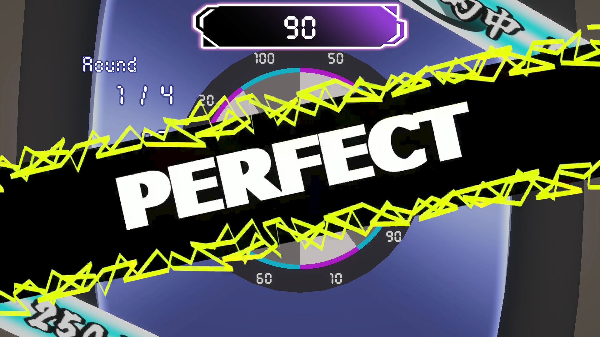
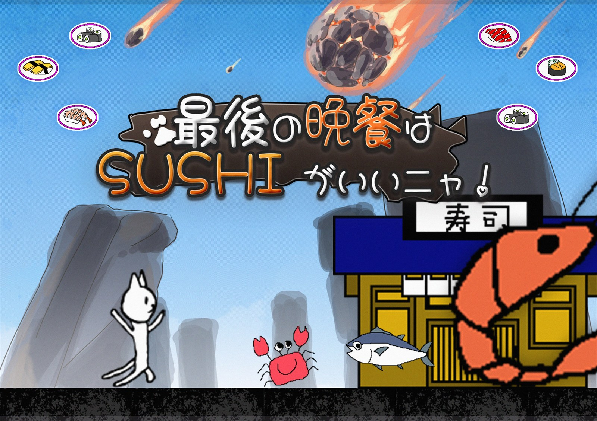

高得点に、最大限の手応えを

スロット演出を参考に、PERFECTのカットインと3Dの数字を使った高得点演出を企画。音の勢いに負けない画面構成で、プレイヤーに「うまくいった」という手ごたえを返せるように設計しました。
ページ数消化でBONUSを目指すゲーム性！
確認したい項目への直撃機能も搭載


挨拶がちゃんとできる
オタクすぎて話が長い
素直でやる気を感じられる
目押し下手すぎ
ウルティマダーツ
ヒューマン全国ゲームJAM２位作品
ダーツ × スキルのローグライト。
毎ラウンド選択できる強化を重ね、自分だけのビルドで超高得点を狙え！！

スロット演出を参考に、PERFECTのカットインと3Dの数字を使った高得点演出を企画。音の勢いに負けない画面構成で、プレイヤーに「うまくいった」という手ごたえを返せるように設計しました。
「投げる → 得点する → スキルで強化する」という流れを完成させるため、実装の優先度を仕様書で色分けしました。制作3日目の終了時に残り2日から逆算し、高得点時の数字出現演出に注力する判断を下しました。また電飾は当初の仕様書にはなかったものの、少ない手数で迫力を増せると判断し追加しました。
ヒューマンアカデミー秋葉原校 夏季JAM 1年生最優秀賞
ウニなし連続：0回
隕石が迫るなか、ネコを操作して制限時間内に寿司屋を目指す2Dランアクション。コインをたくさん集めて、できるだけ高い寿司にありつこう！
試遊で「操作性が悪い」という声が出ましたが、慌ただしい疾走感は必要な要素だと考え、先の足場が見えるように適切にカメラを引くことで移動速度に変更を加えることなく、次の動きを判断できるような画面にすることができました。
TGSでは、試遊の機会は基本的に一人一回と想定したので、初回でもクリアできるように、寿司屋まで進みやすい道を用意しました。ただし難しい足場の先には高得点のコインを置いて、ゴールを急ぐか寄り道して稼ぐかを選べるゲーム設計にしました。
GFFに向けて開発中
小さな建物は歩いて壊し、大きな建物は必殺技で。
破壊総額を可能な限り伸ばし、究極の破壊王として名を轟かせろ！
制作初期はCG専任のメンバーがいなかったため、TripoやCodexを使ってモデル・テクスチャ制作と動作検証を進めました。怪獣の骨格を組み、尻尾攻撃の構えから振り抜きまでを検証しました。
PLATEAUの3D都市モデルをもとに、福岡の街並みを再現しました。建物の施工費を概算し、壊した建物に応じて被害額が積み上がる仕組みを設計しました。遊び心で福岡城もゲーム内に再現しています。
谷口 颯一
ヒューマンアカデミー秋葉原校
ゲームカレッジ プランナー学科 1年生2028年卒業予定
ゲーム／遊技機プランナー志望
期待は裏切らず 予想を裏切る
塾講師を2年間務めました。
遊技機デバッグのアルバイトでは、実際の台の仕様書を読みさらに勉強中です。
以前の就活イベントで、500人の前で個人プレゼンテーションを行いました。
任された仕事で結果を出すことが、私のモチベーションです。どんな仕事にも全力で取り組みます！
資格：実用英語技能検定 準1級
Lデビルメイクライ5ST
バージルが特化ゾーンになった時点で嬉しい。
代名詞の『次元斬・絶』でゲーム数の減算を止め、その間に上乗せを繰り返すという原作の技が遊びに落とし込まれているのが激熱。
（あと一気に500枚に近づく点も大好きです）
L 甲鉄城のカバネリ 海門決戦
前作ではレバーオンで伝えていた当落を、今作では疑似遊技中のリール停止で見せる。
前作の良さを残したまま、止めた瞬間の貫いた一撃感が増しているのに感動しました。
六根清浄！
緑色は訪れた都道府県
人との交流がとにかく好き
ネットで知り合った友人に会いに行くために全国旅行をよくしています
（東京に呼びつけるより、行く方が倍楽しいと思っている）
シアトルにホームステイした際のファミリーとは今でも誕生日プレゼントを贈り合う仲です！
S2 キラーランキング 14位 （全サーバー）
グローバル版 S1 最終ハンターランキング 28位 （ちゃんまお）
キャラクター別 グレンジャー日本1位／クラウド日本2位
アジア1731位 TOP0.19%
LX SEASON:02 日本309位
一度起きたミスをすぐに覚え、次の試合で同じ状況になったときに判断を変えられます。
同じミスを犯さず、次に活かすことができる分析力と記憶力が上達に結び付いています。
PERACON 2026 総合35位 アマチュア12位
ウイルスに感染したおんぼろPCを、ポップアップを消して守り抜くコミカルクリッカー系ゲーム
ゲーム企画書を読み込み中
ポップアップが増えました。
残りあと1枚…？
もう1枚、増えました！
ゲーム企画書を開きました！
その他制作/AI利用物
制作期間：2週間 修正回数：220回
九龍城塞をモチーフに、ネオンが灯るレトロフューチャーな街を制作しました。狭い路地に店先の食事風景や上階の洗濯物を配し、夜の街に人の暮らしが見えるようにしました。
Codexを活用して制作。SUSHIの抽選や破壊王の光線など、作品ごとの演出を操作して体験できます。
一番好きな作曲家 SAWANO HIROYUKI の楽曲を聴き込み、その作風の特徴を自分なりに分析して制作しました。
Seethroughで一枚絵をパーツに分け、
WebGLで動かしています
なでなでしよう
『最後の晩餐はSUSHIがいいニャ』では、メインプランナーを務めながら、敵やアイテム、案内板などのドット絵も担当しました。